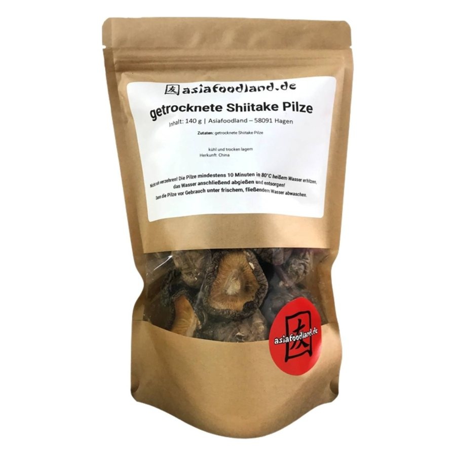
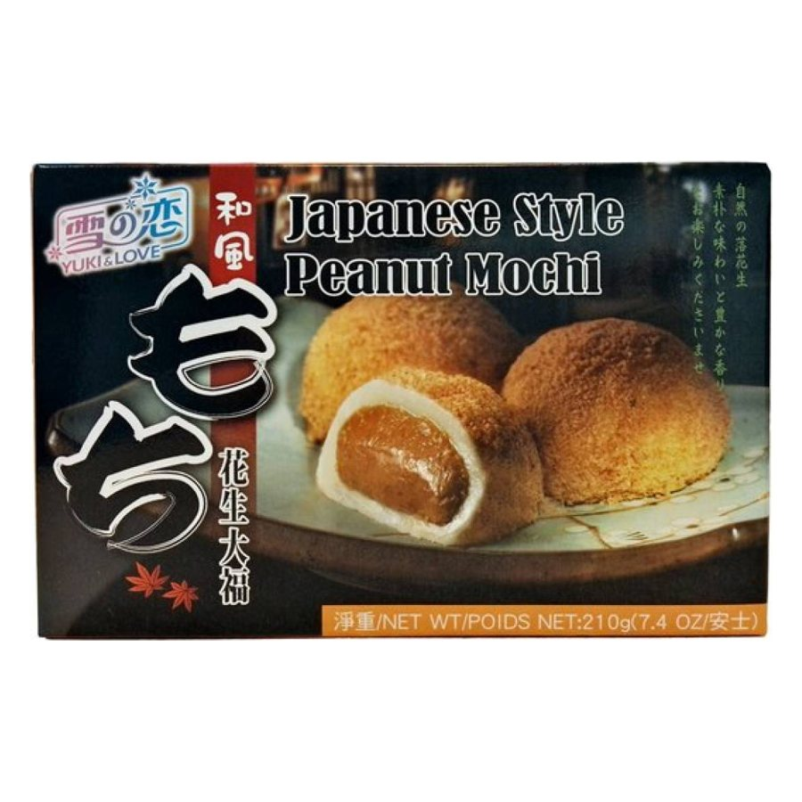
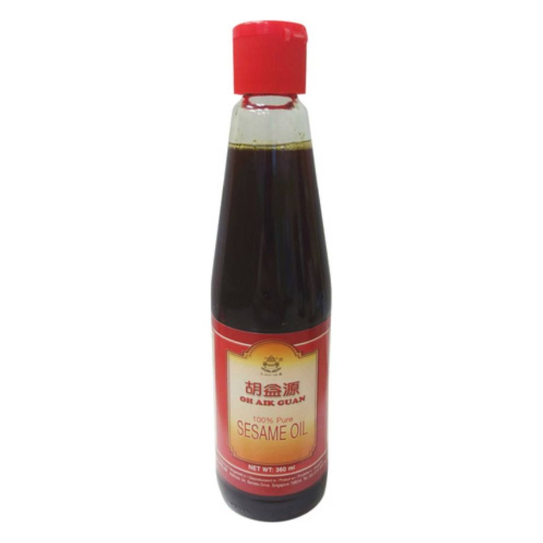
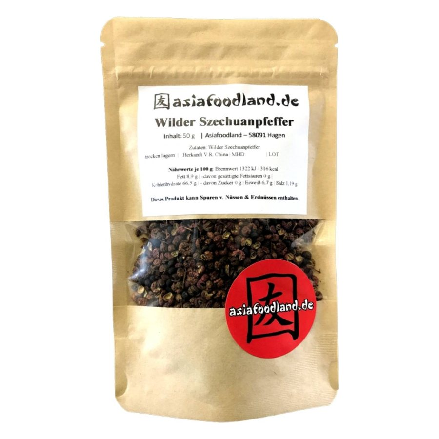
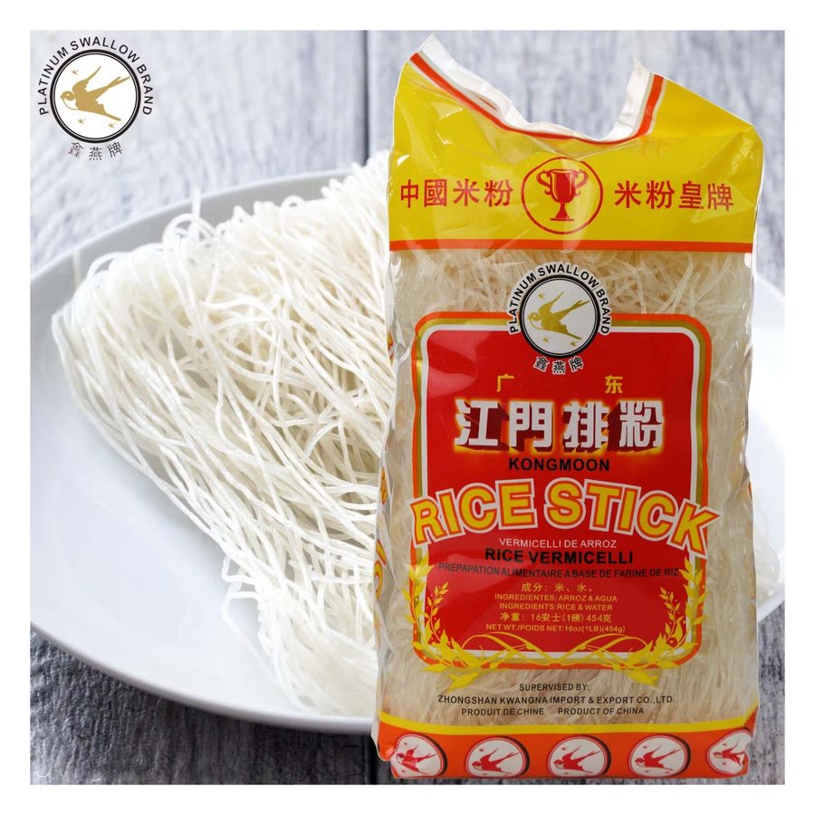

Start / Asia-Lebensmittel & Snacks / Nori-Algenblätter geröstet (Yaki Sushi Nori), 10 Blatt, 28 g

Abbildung ähnlich – zeigt den Produkttyp.
Asia-Lebensmittel & Snacks
Nori-Algenblätter geröstet (Yaki Sushi Nori), 10 Blatt, 28 g
Geröstete Nori-Blätter für Sushi und Onigiri.
Geröstete Nori-Algenblätter, 10 Blatt je Packung, für Sushi-Rollen und Onigiri. Knusprig und dunkelgrün, im feuchtigkeitsdichten Beutel.
Technische Daten
| Inhalt | 10 Blatt, 28 g |
|---|---|
| Zustand | geröstet |
| Verpackung | Beutel, feuchtigkeitsdicht |
| Zolltarifnummer (HS) | 12122100 |
EU-Normen und Vorschriften
VO (EU) 1169/2011Lebensmittelinformation und KennzeichnungVO (EG) 396/2005Rückstandshöchstgehalte PestizideVO (EU) 2023/915Höchstgehalte KontaminantenVO (EG) 1935/2004Lebensmittelkontaktmaterialien (Verpackung)
Weitere Produkte dieser Kategorie

Chili Crisp (Knusper-Chiliöl), Glas 210 g

Sojasauce hell (Light Soy), gebraut, Flasche 500 ml

Glasnudeln (Mungbohnen-Vermicelli), Beutel 500 g

Tapioka-Perlen (Boba) Brown Sugar, 5-Minuten-Kochperlen, Beutel 250 g

Oolong-Tee Tieguanyin (Anxi, Fujian), lose, Beutel 100 g

Getrocknete Shiitake-Pilze, ganze Hüte, Beutel 100 g (plus Mu-Err)

Konjak-Nudeln (Shirataki), Nassbeutel 200 gSehr kalorienarme Konjak-Nudeln im Nassbeutel (200 g) für Low-Carb-Sortimente: abspülen, kurz erhitzen, fertig.

Mochi (Klebreiskuchen), pflanzlich: Sesam, Erdnuss, Anko, Geschenkbox 210 g

Sesamöl, geröstet, Glasflasche 250 mlReines, geröstetes Sesamöl in der Klarglasflasche: das Aroma-Finish für Wok, Nudeln, Dips und Dressings.

Sichuan-Pfeffer (Huajiao), rot, ganze Körner, Beutel 100 gGetrocknete rote Sichuan-Pfefferschalen (Huajiao), ganz: das prickelnd-betäubende Gewürz für Mala-Gerichte, Chiliöl und Würzmischungen.

Ramen-Nudeln, getrocknet, Schnellkoch, 300 gJapanisch angelehnte Trockenramen zum Schnellkochen.

Reisvermicelli (Reisfadennudeln), getrocknet, BeutelDünne getrocknete Reisfadennudeln, glutenfrei.

Pad-Thai-Reisnudeln (Reisbandnudeln), getrocknetBreite Reisbandnudeln für Pad Thai und Wok-Gerichte.

Erdnussöl, raffiniert, FlascheRaffiniertes Erdnussöl zum Braten und für den Wok.
Matcha-Pulver (Grüntee), Kochqualität, DoseFein gemahlener Grüntee für Getränke und Backen.

Popping Candy (Knisterbrause) Erdbeere, BeutelKnisternde Brausebonbons in Fruchtgeschmack.

Weizennudeln (Udon-Stil), getrocknet, BeutelGetrocknete Weizennudeln ohne Ei für Suppen und Wok.